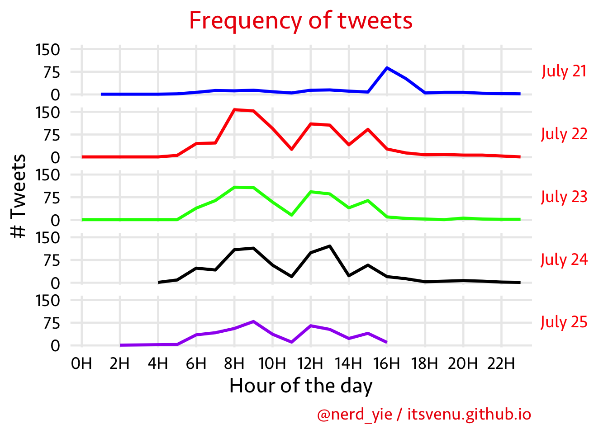
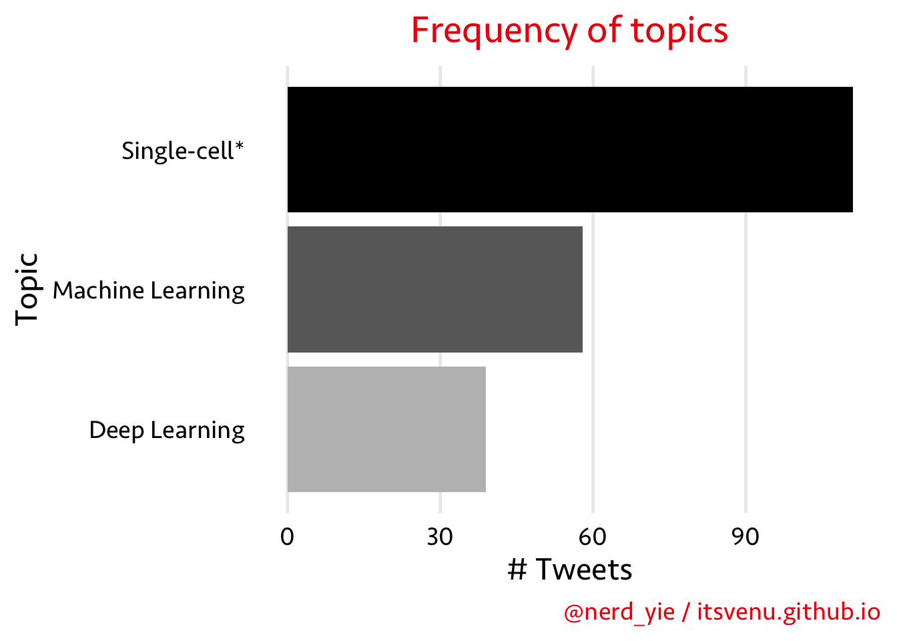

ISMB2019_Analysis.Rmd
ISMB/ECCB 2019 conference was organized from July 21st - July 25th in Basel, Switzerland.
Twitter data for the conference days July 21 - July 25th, 2019 was collected and cleaned on July 25th evening after last keynote.
I only used the following columns from above data
created_at
screen_name
text

Identifying the trends of topics in talks
